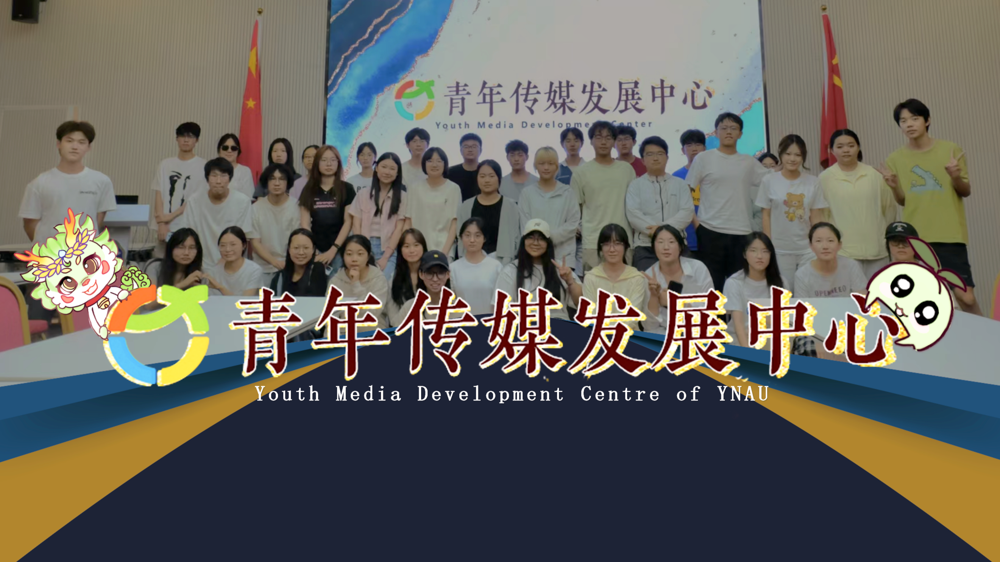
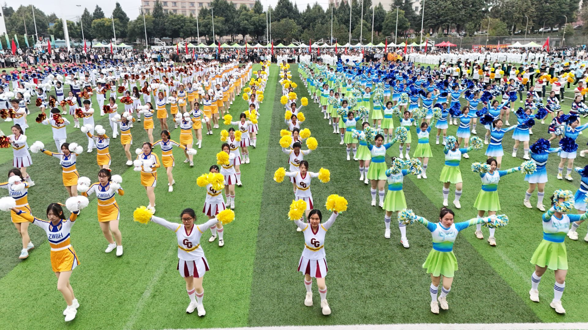
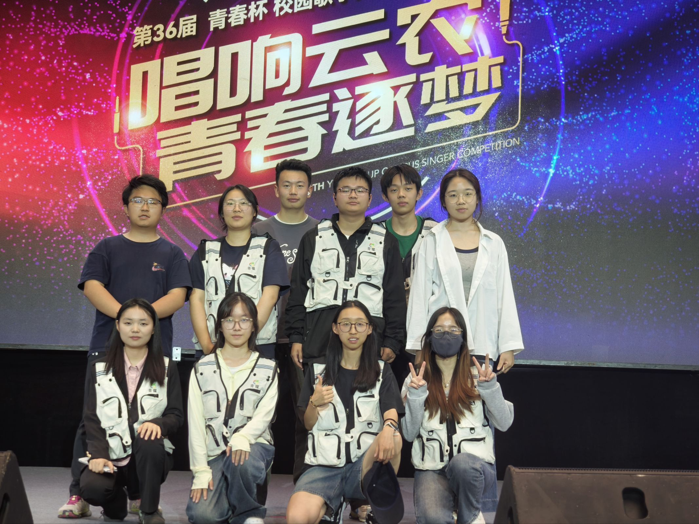
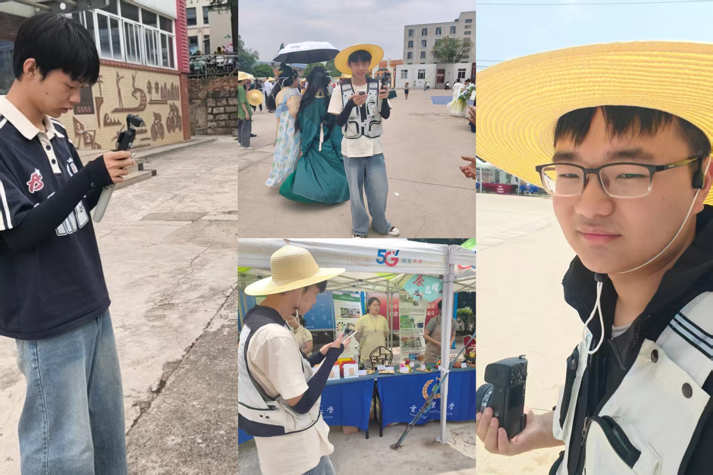
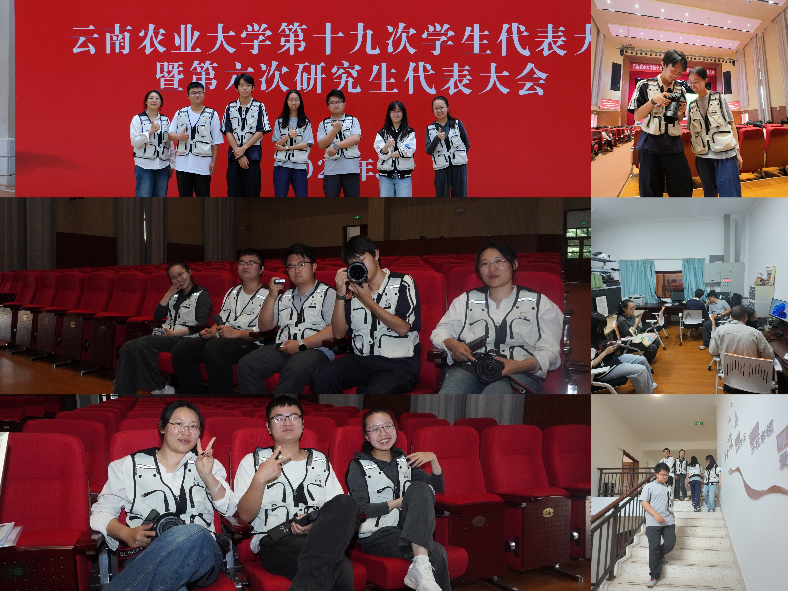
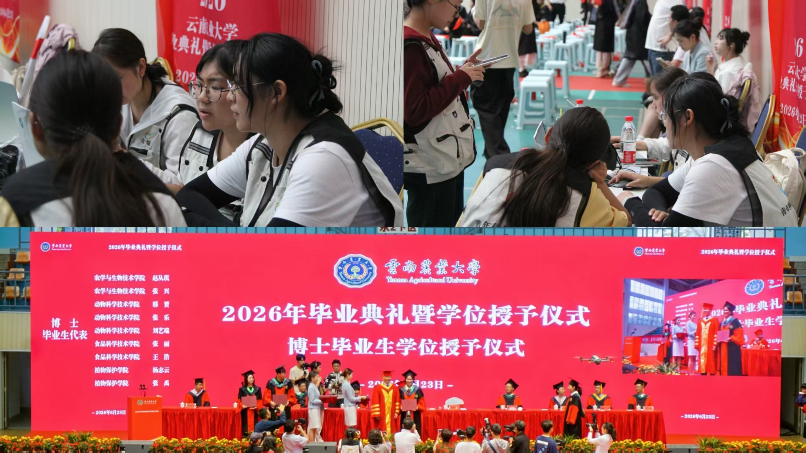

团学新闻部
聚焦校园时事，挖掘榜样力量。负责新闻采编、人物专访及新媒体运营，传递青春正能量。
采写
我们是谁
青年传媒发展中心成立于 2016 年 10 月，是学校官方校园新媒体运营阵地。
中心长期开展校园新闻采编、图文摄影、短视频创作、推文排版发布、活动纪实宣传等多元传媒实践，围绕校园大型会议、三下乡社会实践、文体赛事、榜样人物专访等场景，持续推进校园文化品牌建设。
我们打造“青春云农”公众号与视频号双平台宣传矩阵，形成文字采编、视觉拍摄、视频制作、新媒体运营一体化的传媒特色，让每一个值得记录的云农故事被更多人看见。
编辑部矩阵
聚焦校园时事，挖掘榜样力量。负责新闻采编、人物专访及新媒体运营，传递青春正能量。
采写负责“青春云农”公众号推文排版、发布及视频号内容推送，是校园宣传的新媒体窗口。
发布承担会议与活动的图片、视频拍摄及后期制作，并负责“青春云农”视频号日常内容更新。
影像梳理第二课堂材料与积分，汇总志愿服务及工作积分，支撑各部门后勤协调工作。
统筹现场直击
从舞台到赛场，从会议到典礼。
每一帧都是云农正在发生的故事。
专题报道

01视觉效果部全程负责赛事纪实，捕捉赛场竞技、运动员风采与开幕式画面，产出高清配图并同步完成短视频素材录制。
青春云农 · 公众号 / 视频号
02团学部采访撰稿，视觉部拍摄图文与舞台视频，网媒部负责推文排版和视频号运营，全媒体矩阵共同记录声乐盛会。
青春云农 · 公众号 / 视频号
03现场采访、纪实拍摄、全场直播、公众号排版同步推进，以融媒体形式展现学校耕读育人特色。
青春云农 · 公众号 / 视频号
04从采访撰稿到会场纪实，再到推文发布与整体统筹，全方位呈现学代会风貌与云农青年的青春担当。
青春云农 · 公众号 / 视频号
05图文直播浏览量达 26 万+。实时采写、高清纪实、直播页面更新与现场统筹协同推进，以融媒体定格毕业温情。
青春云农 · 公众号 / 视频号